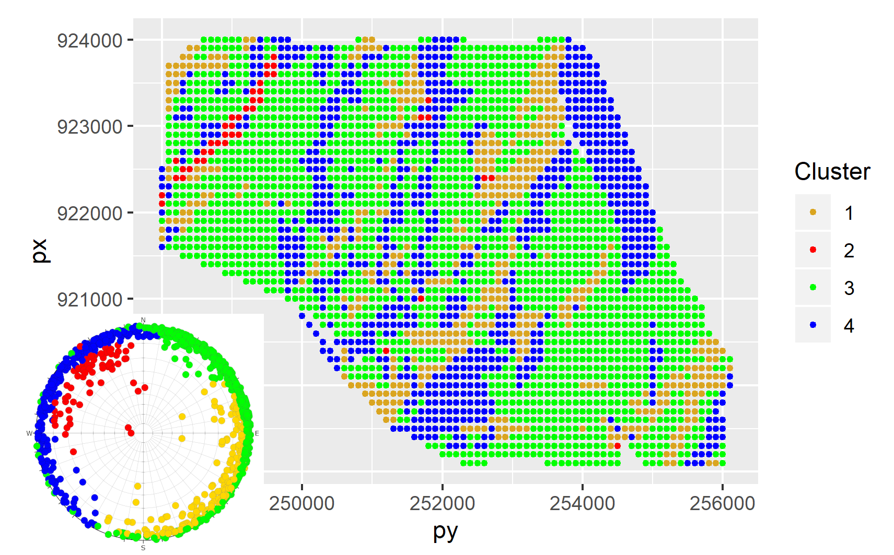

Details
Subsurface geological modelling
Machine-learning algorithms can be employed to identify homogenous subsets of orientations sampled throughout geologic horizons. Below you can find results for a Middle-Jurassic horizon within Kraków-Silesian Homocline, a geological unit with preferred dip direction to NE and subsidiary fault network. The second picture presents screenshot from ParaView for a data set covering Central European Basin System, since our computer code automatically creates files that can be uploaded there.

Spatial epidemiology
In July 2020, Luxembourg was declared a risk zone by many European countries, including Slovakia, Lithuania, Finland, Norway and Germany.
The latter country used only the cases/inhabitants metric to render Luxembourg a risk zone.
Since the measure used is biased by testing heterogeneity, countries with greater testing capabilities than others would be susceptible to being declared a risk zone.
Indeed, one month later, the ban on Luxembourg was lifted by Germany and the justification was that Luxembourg had adopted a large-scale screening strategy.
We proposed a risk measure (WCSIR) that is biased neither by variation in population size nor by the spatial heterogeneity of testing.
It is relative in nature and it can be conceptualised either as weighting relative infection risk by relative intensity of testing
or as normalising local positivity by global positivity. The proposed methodology was investigated for administrative and contiguous regions of Poland.
However, it can easily be used for non-contiguous regions or countries provided that the data for the population, infection, and testing are available.
We developed also a shinyApp to observe the epidemic dynamics over time.

Ecclesiological dynamics
It is a historical fact that during 4th century trinitarian controversy, three competitive quasi-ecclesial (schismatic) factions emerged: Anomoeans (Heterousians), Homoiusians and Homoians. They competed with each other but also cooperated because they had a common enemy - bishop of Rome. However, it seems that in 21 century that we also have a similar organism that deserves a thorough description and interpretation. Below you can find abstract of a planned article: "We discuss structural and dynamical properties of two ecclesiological organisms from the viewpoint of trinitarian ecclesiology with an eschatological perspective. We highlight mutual competition and cooperation between associated members. While the first aspect is understood as proposing competitive solutions to a theological problem, the second is conceptualized as fight against common enemy, that is the orthodox doctrine. The first organism relates to the 4th century Christological controversies with three factions that differed in their understanding of relationship between Father and Son. The second example refers to contemporary set of theological parties that promote competitive heuristics for achieving eternal life. These heuristics are contaminated by the sense of appropriation of divine authority, being thus detached not only from Catholic orthodoxy but also the Christian monotheism. In both organisms we observe the somewhat circular pattern in that the competition between factions is followed by their coalescence. Given a theological faction, this coalescence is understood as emergence of components that were typical for opposing factions. As such, we consider our study to be a starting point for including a dynamical perspective in the examination of singular ecclesiological organisms and for their critical assessment within the framework of trinitarian theology."